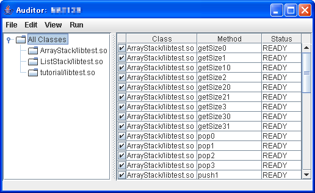
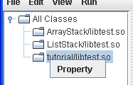
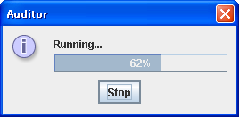
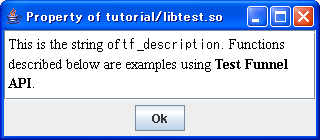
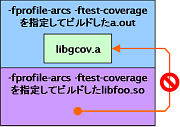

Test Funnel
Manual
テストクラスの作成（テストの書き方）
ターゲットをテストするテストクラスの作成方法を説明します。テストクラスはターゲットのAPIとTest Funnel APIを使用する共有ライブラリです。Test Funnel APIの詳細はAPIリファレンスを参照してください。
マクロTF_AUDIT
テストメソッドの書き方には2つのスタイルがあります。最初にマクロTF_AUDITを使用する書き方を説明します。TF_AUDITを使ってテストメソッドを記述すると、次のようになります。
#include <tf/TestFunnel.h> #include <target.h> #include "test.h" void TF_AUDIT test_method_1(void) { ... } void TF_AUDIT test_method_2(void) { ... } ...
target.hはターゲットのヘッダファイルになります。test.hには次のようなテストメソッドのプロトタイプ宣言を記述します。
void TF_AUDIT test_method_1(void); void TF_AUDIT test_method_2(void);
test.hに相当するヘッダファイルを（何かの仕様から）自動的に生成するような状況では、このスタイルでテストメソッドを記述するとよいでしょう。そうでなければ、次に説明するマクロTF_を使用するスタイルの方が簡単です。
マクロTF_METHOD
続いて、マクロTF_METHODを使用する書き方を説明します。このマクロを使ってテストメソッドを記述すると、次のようになります。
#include <tf/TestFunnel.h> #include <target.h> TF_METHOD(test_method_1) { ... } TF_METHOD(test_method_2) { ... } ...
以降ではマクロTF_METHODを使用して説明します。
テストメソッドの規則
テストメソッドは引数なし、戻り値なしの関数として記述します。テストを成功、失敗させる方法を順に説明します。
テストを成功させる
テストメソッドが呼び出しから戻ると、そのテストメソッドのテストは成功したことになります。次に示すテストメソッドnever_failは常に成功します。
TF_METHOD(never_fail) {
/* なにもしない */
}
テストを失敗させる
テストを明示的に失敗させるには、関数tf_fail()を使用します（実際にはtf_fail()はマクロですが、ここではあまり気にする必要はありません）。次に示すテストメソッドalways_failは常に失敗します。
TF_METHOD(always_fail) {
tf_fail("this method always fails.");
/* NOTREACHED */
}
このテストを実行すると、tf_fail()の引数の文字列とスタックトレースがコンソールに出力されます。また、tf_fail()の呼び出しは戻りません。
条件が成立しないときテストを失敗させる
ある条件式が成立しない場合にテストを失敗させるには、関数tf_assert()を使用します（これも実際にはマクロです）。次に例を示します。
TF_METHOD(test_method_a) {
...
tf_assert(条件式);
...
}
これと等価のテストをtf_fail()を使用して記述すると、次のようになります。
TF_METHOD(test_method_b) {
...
if (!(条件式)) {
tf_fail("条件式");
}
...
}
このことからわかるように、tf_assert()の引数の条件式が偽の場合、条件式とスタックトレースがコンソールに出力されます（呼び出しも戻りません）。
前処理と後処理
テストクラスとなる共有ライブラリで関数tf_initialize()を定義しておくと、ファンネルはテストメソッドを呼び出す直前にtf_initialize()を呼び出します。同様に、関数tf_finalize()を定義しておくと、テストメソッドを呼び出した直後にtf_finalize()を呼び出します（ただし、テストメソッドが失敗した場合はtf_finalize()を呼び出しません）。
これらの関数は、次のような引数なし、戻り値なしの関数でなければなりません。
void tf_initialize(void) { ... } void tf_finalize(void) { ... }
テストの説明
テストクラスとなる共有ライブラリで定数文字列tf_description[]を次のように定義しておくと、ファンネルやコンソールサーバがテストクラスの説明として、定義した文字列を表示するようになります。
const char tf_description[] = "テストクラスの説明 ";
この文字列はテストに影響しませんが、定義しておくとテストの理解に役立ちます。
メモリリークの許可
ライブラリの初期化の関数など、内部的にメモリを確保してプールするものがあります。こうしたAPIをテストから呼び出すと、メモリリークが起きているように見えてしまいます。tf_permitMemoryLeak()を使用して、そのような見かけ上のメモリリークをファンネルが無視するように指示することができます。
次のように関数tf_permitMemoryLeak()を使用すると、引数に指定した関数を実行している間に割り当てられたメモリは、解放されなくてもメモリリークとして報告されなくなります。
static void func(void)
{
/*
この関数から割り当てたメモリは解放しなくても
メモリリークにはならない
*/
...
}
TF_METHOD(test_method) {
...
tf_permitMemoryLeak(func);
...
}
この関数は再帰的に使用することはできません。つまり、tf_permitMemoryLeak()の引数に指定した関数から、tf_permitMemoryLeak()を呼び出さないでください。
スタックトレースの表示
次のように関数tf_printStackTrace()を使用して、任意の場所でスタックトレースをコンソールに表示することができます。
static void common_test()
{
...
tf_printStackTrace();
...
}
TF_METHOD(test_method_c) {
...
common_test();
...
}
この関数はテストに影響しません。主にテストのデバッグに使用します。
注意: GNU Binutilsのバグのため、GNU Binutils 2.18またはそれ以前のバージョンを利用している場合、このメソッドを使用するとメモリリークが発生します。
ファンネルの使用方法
ファンネルの動作モードには、単独で動作するスタンドアロンモードと、コンソールサーバと接続するクライアントモードがあります。起動方法の詳細はリファレンスを参照してください。
スタンドアロンモード
スタンドアロン（コンソールサーバなし）でファンネルを実行する場合の使用方法を説明します。
次のようにコマンドラインにターゲットとテストの共有ライブラリを指定してfunnelコマンドを実行します。
% funnel libTarget.so -s libTest1.so libTest2.so ...
ターゲットが依存するライブラリ（またはそのスタブ）がある場合は、次のようにターゲットと依存するライブラリをコロンで区切って指定します。
% funnel libStub1.so:libStub2.so:...:libTarget.so -s libTest1.so ...
どちらの場合もファンネルはすべてのテストを順番に実行します。すべてのテストに成功した場合はステータスコード0で終了します。そうではなく、テストメソッドの呼び出しが成功しなかった場合、その時点でファンネルはテストを中止して、ステータスコード1で終了します。
ファンネルに-mオプションを追加指定することで、テストに成功したあと、さらにメモリリークを検出するようになります。メモリリークが検出された場合は、テストが失敗したときと同様に、その時点でファンネルはテストを中止して、ステータスコード1で終了します。
クライアントモード
コンソールサーバに接続してファンネルを実行する場合の使用方法を説明します。
まず次のようにAuditor（コンソールサーバ）を実行します。
% auditor &
次のようなAuditorのサーバウィンドウが表示されます（Auditorの使用方法は後述します）。
次にファンネルを実行します（-sオプションを外す以外はスタンドアロンモードの場合と同じです）。
% funnel libTarget.so libTest1.so libTest2.so ...
コンソールサーバが動作しているホストとファンネルが動作するホストが異なる場合は、次のように-dオプションにホスト名を指定してから、ファンネルを実行します。
% funnel libTarget.so -d hostname libTest1.so ...
ファンネルに-mオプションを追加指定することで、さらにメモリリークの検出を有効にします。
Auditorが動作しているホストに、次のようなコンソールウィンドウが表示されます。以後はこのコンソールウィンドウからファンネルを操作します。

Auditor（コンソールサーバ）の使用方法
Auditorはサーバウィンドウと、ファンネルとの接続毎に生成されるコンソールウィンドウで構成されます。起動方法の詳細はリファレンスを参照してください。
サーバウィンドウ
サーバウィンドウはメニューバーだけで構成されています。
メニューバー
メニューバーには「File」のメニューがあります。Fileメニューには次の項目があります。
- Exit
- Auditorを終了します。接続しているファンネルはすべて終了します。
コンソールウィンドウ
コンソールウィンドウは左側にクラスペイン、右側にメソッドペインと、上部にメニューバーを備えています。ウィンドウのタイトルに、接続しているファンネルのホスト名またはIPアドレスを表示します。
コンソールウィンドウの例
クラスペイン

コンソールウィンドウの左側のペインは、テストクラスの一覧を表示します。テストクラスをクリックすると、メソッドペインの項目をそのテストクラスで絞り込むことができます。すべてのテストクラスを表示するには「All Classes」をクリックします。
クラスペインでテストクラスを選択してからクラスペインを右クリックすると、ポップアップメニューを表示します。ポップアップメニューの「Property」を選択すると、クラスペインで選択されているテストクラスのプロパティダイアログを表示します。
メソッドペイン
クラスペインで絞り込まれたテストメソッドの一覧を表示します。メソッド一覧はテーブル形式で、左からチェックボックス、クラス、メソッド、ステータスの順にカラムが並びます。各カラムの示す内容は次のとおりです。
- チェックボックス
- チェックのあるテストメソッドはテストの対象であることを示します。クリックすることで状態を切り替えることができます。
- クラス
- テストクラス名（共有ライブラリ名）を表示します。
- メソッド
- テストメソッド名を表示します。
- ステータス
- テストの状態を表示します。
次にテストの状態の一覧を示します。
- READY
- テストはまだ実行していません。
- RUNNING
- テストは実行中です。
- OK
- テストは成功しました。
- NG
- テストは失敗しました。
- LEAK
- テストは成功しましたが、メモリリークが検出されました（
funnelに-mオプションを指定した場合のみ）。 - TIMEOUT
- テストは規定時間内に終了しませんでした。
- CRASHED
- テストはシグナルを捕捉して異常終了しました。
- LOST
- テストの動的リンク、またはシンボル解決に失敗しました。ファンネル実行後に共有ライブラリが消去、変更された場合にこの状態になります。
テーブルの各行はクリックまたはドラッグで選択することができます。メニューバーには選択されたテストを対象にする、いくつかの操作が用意されています（チェックボックスのチェックの状態と、選択状態は独立しています）。
メニューバー
メニューバーには「File」「Edit」「View」「Run」のメニューがあります。Fileメニューには次の項目があります。
- Close
- コンソールウィンドウを閉じます。対応するファンネルとの接続も終了します。
Editメニューには次の項目があります。
- Mark
- テーブルで選択されているテストのチェックボックスをすべてオンにします。
- Unmark
- テーブルで選択されているテストのチェックボックスをすべてオフにします。
Viewメニューには次の項目があります。
- Reload
- ファンネルからテストの内容を再読み込みします。
- テストメソッドの追加や削除など、テストクラスの内容を変更したときはこの項目を選択してください。
Runメニューには次の項目があります。
- Go
- テストの対象の（チェックされた）テストメソッドを順に実行します。
- テストの実行中はモーダルダイアログ（進捗ダイアログ）で進捗を表示するため、コンソールウィンドウを操作できなくなります。
- テストを開始すると、テスト対象のテストメソッドの状態はすべて一旦READYになります。また、テスト中のテストメソッドの状態はRUNNINGになります。
- すべてのテストが終了するか、進捗ダイアログでStopを選択すると、進捗ダイアログは閉じて、再びコンソールウィンドウを操作できるようになります。
進捗ダイアログ
進捗ダイアログはプログレスバーを表示してテストの進捗を表示するモーダルダイアログです。Stopボタンを押すとテストを停止します。

進捗ダイアログの例
プロパティダイアログ
プロパティダイアログはクラスペインで選択されていたテストクラスのtf_descriptionの内容を表示するモードレスダイアログです。Okボタンを押すとダイアログを閉じます。

プロパティダイアログの例
共有ライブラリのカバレッジ
古いGCCでは共有ライブラリをgcovで普通にカバレッジすることができましたが、最近のGCCではちょっとした細工をしないとカバレッジすることができません。
GCC 3.4以降ではカバレッジ対象とlibgcov.aをリンクすることでカバレッジが可能になります。カバレッジ対象が実行形式の場合はGCCが面倒をみてくれるので、あまり気にする必要はありません。しかし、カバレッジ対象が共有ライブラリの場合、それをlibgcov.aとリンクすることは（当たり前ですが）できません。一見すると、その「カバレッジしたい共有ライブラリ」を実行時にリンクする実行形式にlibgcov.aをリンクしておけばカバレッジできそうですが、それではうまくいきません。
というのは、libgcov.aが提供する外部シンボルが特殊な属性をもつため、その共有ライブラリとリンクする実行形式にlibgcov.aをリンクしても、共有ライブラリからlibgcov.aのシンボルを見つけることができないからです。objdump -t libgcov.aの出力の一部を次に示します。
...
_gcov_merge_add.o: file format elf32-i386
SYMBOL TABLE:
00000000 l df *ABS* 00000000 libgcov.c
00000000 l d .text 00000000
00000000 l d .data 00000000
00000000 l d .bss 00000000
00000000 l d .debug_abbrev 00000000
00000000 l d .debug_info 00000000
00000000 l d .debug_line 00000000
00000000 l d .debug_frame 00000000
00000000 l d .debug_pubnames 00000000
00000000 l d .debug_aranges 00000000
00000000 l d .debug_str 00000000
00000000 l d .comment 00000000
00000000 g F .text 00000024 .hidden __gcov_merge_add
00000000 *UND* 00000000 __gcov_read_counter
...

.hiddenと表示されているものは、そのシンボルの可視性が「所属するコンポーネント（共有ライブラリまたは実行形式）の内部からしか見えない」ことを意味しているようです。つまり、コンポーネントを越えてhidden属性のシンボルにアクセスすることはできません。したがって、共有ライブラリをカバレッジするためには、libgcov.aのオブジェクトをその共有ライブラリになんとかして埋め込む必要があります。
共有ライブラリに別のアーカイブ（libgcov.a）をまるごと含めることができれば、その共有ライブラリのカバレッジができそうです。GNUリンカld(1)のオプションを調べてみると、その目的にふさわしいオプション--whole-archiveがあることがわかりました。
結局、共有ライブラリを生成するときに次のオプションをGCCに追加で指定すれば、実行形式と同様にその共有ライブラリをカバレッジすることができるようです。
-Wl,-whole-archive -lgcov -Wl,-no-whole-archive
制限事項
Test Funnelでは次のような共有ライブラリを使用できません。
-fomit-frame-pointerを指定してコンパイルしたライブラリ
Test Funnelはメモリリークを検出するために、malloc(3)の呼び出しを横取りしています。呼び出しを捕捉したら、本物のmalloc(3)を呼び出した後、確保したメモリアドレス、サイズ、プロセスID、スタックトレースなどをファイルに記録します。実際には、メモリリークを検出する、しないに関わらず、常にmalloc(3)の呼び出しを横取りして、スタックフレームを確認しています。このため、malloc(3)を呼び出すライブラリがgccの-fomit-frame-pointerオプションを指定してコンパイルしたものだと、スタックフレームを不正に追ってしまい、クラッシュします。